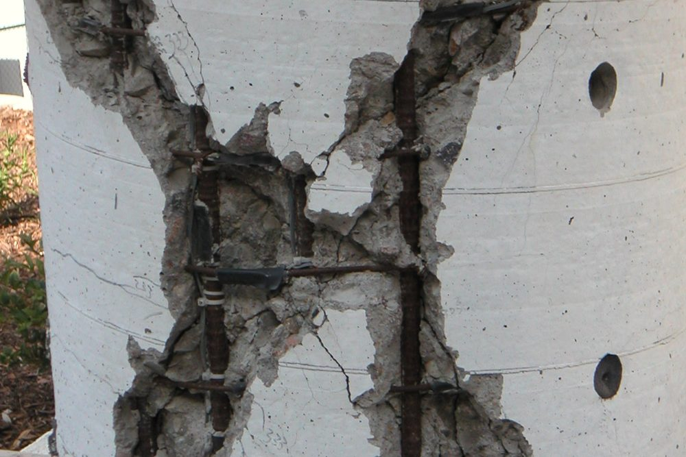
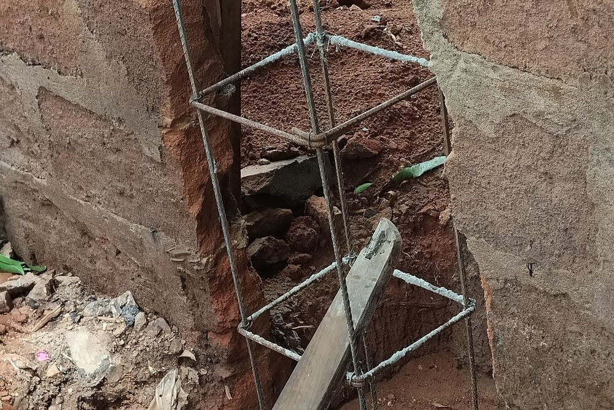

Pourquoi le milieu marin attaque-t-il le béton armé ?
Le béton armé est un matériau très durable lorsqu'il est protégé de son environnement. Il associe le béton, qui résiste bien à la compression, et des aciers qui reprennent les efforts de traction. Cette association ne fonctionne dans le temps que si les aciers restent intacts. Or, au bord de la mer et sous climat tropical, plusieurs agressions se cumulent pour les attaquer.
La principale est le chlorure, le sel marin. Il n'est pas nécessaire d'être au contact de l'eau : l'air chargé d'embruns dépose du sel sur les façades, qui pénètre ensuite lentement dans le béton, porté par l'humidité. Quand les chlorures atteignent les armatures en quantité suffisante, ils détruisent la couche protectrice qui se forme naturellement autour de l'acier dans un béton sain. La corrosion peut alors s'amorcer.
À cela s'ajoutent des conditions propres aux Antilles : une humidité élevée toute l'année, des alternances de pluies intenses et de fort ensoleillement, et des températures qui accélèrent les réactions chimiques. Le béton y est donc plus sollicité qu'en climat tempéré, et les erreurs de conception ou de chantier se paient plus vite. Les mêmes précautions valent sur le littoral de la Guyane, au climat équatorial humide.
Un point à retenir. La corrosion des armatures est la cause principale de dégradation du béton armé en site marin. La rouille occupe un volume plus important que l'acier d'origine : elle pousse sur le béton qui l'entoure, le fissure puis le fait éclater. Plus la dégradation est avancée, plus la réparation est lourde.
Les classes d'exposition XS : savoir où se situe votre ouvrage
La norme NF EN 206 (complétée en France par son complément national NF EN 206/CN) classe les environnements auxquels un béton est exposé. On parle de classes d'exposition. Pour l'action des chlorures provenant de l'eau de mer, ce sont les classes XS. Elles servent de point de départ à tout le reste : la formulation du béton et l'enrobage des armatures en dépendent.
| Classe | Situation de l'ouvrage | Exemple aux Antilles |
|---|---|---|
| XS1 | Exposé à l'air véhiculant du sel marin, mais sans contact direct avec l'eau de mer | Façade ou structure de maison située près du littoral |
| XS2 | Immergé en permanence | Fondation d'un ouvrage portuaire, pieu immergé |
| XS3 | Zones de marnage, zones soumises aux projections et aux embruns | Ponton, quai, mur de front de mer, terrasse sur la plage |
Ces classes ne se déduisent pas d'une distance fixe à la mer : le relief, les vents dominants et l'exposition de la parcelle comptent. Une construction située sur une côte face au vent peut être beaucoup plus exposée qu'une construction plus proche du rivage mais abritée. Le choix de la classe se fait donc en tenant compte du site réel, et en cas de doute on retient la classe la plus sévère.

L'enrobage renforcé : la première barrière
L'enrobage est l'épaisseur de béton qui sépare la surface de l'ouvrage des armatures les plus proches. C'est la première barrière contre les chlorures : plus il est épais et compact, plus il faut de temps aux agents agressifs pour atteindre l'acier.
L'Eurocode 2 (NF EN 1992-1-1) définit l'enrobage nominal comme la somme d'un enrobage minimal, qui dépend notamment de la classe d'exposition et de la durée d'utilisation de projet, et d'une marge pour tolérances d'exécution. Plus la classe d'exposition est sévère, plus l'enrobage minimal exigé est important. Le bureau d'études le fixe dans la note de calcul et le reporte sur les plans d'armatures.
Deux conséquences pratiques pour un projet en bord de mer :
- L'enrobage est plus épais qu'à l'intérieur des terres. Cela influence les dimensions des sections : un poteau ou une poutre doit être un peu plus large pour conserver sa résistance malgré cet enrobage supplémentaire.
- Il doit être réellement respecté sur le chantier. Un enrobage correct sur le plan mais insuffisant sur l'ouvrage ne protège rien. Les cales d'enrobage, leur nombre et leur répartition sont déterminants.
Conseil de chantier. Demandez à l'entreprise d'utiliser des cales en béton ou en matériau durable, adaptées à la classe d'exposition, et de les poser en nombre suffisant pour que les armatures ne s'affaissent pas pendant le coulage. Les cales métalliques sont à éviter en site marin, car elles peuvent rouiller et laisser des traces en surface. Ces éléments relèvent de l'exécution : ce sont des conseils, pas des prestations de MH Structure.
Formulation du béton et choix du ciment
Un béton durable en site marin est avant tout un béton compact, donc peu poreux. Cela passe par une formulation adaptée, qui relève du fournisseur de béton ou de la centrale de béton prêt à l'emploi, à partir des exigences du bureau d'études. Les paramètres qui comptent :
- Un rapport eau/liant faible : moins il y a d'eau excédentaire, moins le béton est poreux. La norme NF EN 206/CN fixe, pour chaque classe d'exposition, des valeurs limites du rapport eau efficace sur liant, une classe de résistance minimale et un dosage minimal en liant.
- Le type de ciment : les ciments contenant du laitier de haut fourneau ou des cendres volantes ralentissent la pénétration des chlorures. Les ciments portant la mention PM (prise mer, norme NF P 15-317) sont conçus pour une mise en oeuvre en milieu marin. La mention ES (NF P 15-319) concerne les eaux à forte teneur en sulfates.
- Des matériaux sains : sables et granulats ne doivent pas être contaminés par le sel. Un sable marin non lavé est à proscrire, de même que l'eau de gâchage salée. La teneur totale en chlorures du béton est limitée par la norme NF EN 206.
- Une bonne ouvrabilité sans ajout d'eau : sur chantier, on obtient la fluidité voulue par des adjuvants, jamais en rajoutant de l'eau dans la toupie.
La note de calcul et les plans indiquent la classe d'exposition et l'enrobage : ils sont la référence à transmettre au fournisseur de béton pour qu'il propose la formulation correspondante.

La qualité de mise en oeuvre fait la durabilité
Même avec une bonne formulation, un béton mal mis en oeuvre reste vulnérable. En climat tropical, quatre points méritent une attention particulière, que l'on retrouve aussi dans nos articles sur les erreurs fréquentes de ferraillage et sur la reprise de bétonnage :
- La vibration : elle chasse l'air emprisonné et assure un béton dense, notamment autour des armatures. Un béton mal vibré présente des nids de cailloux, des chemins directs pour les chlorures.
- La cure : sous une forte chaleur, le béton perd vite son eau de surface, ce qui provoque des fissures de retrait et une peau poreuse. Protéger et humidifier le béton pendant les premiers jours est indispensable.
- Les reprises de bétonnage : ce sont des zones fragiles, où l'eau et le sel s'infiltrent facilement. Elles doivent être prévues, préparées et limitées.
- Les horaires de coulage : par forte chaleur, couler tôt le matin limite l'évaporation et la prise trop rapide du béton.
Les pathologies observées aux Antilles
Les désordres rencontrés sur les ouvrages en béton armé aux Antilles suivent un schéma assez constant. Les connaître permet de les repérer tôt :
- Traces de rouille en surface : des coulures brunes sur la façade ou sous un balcon indiquent qu'une armature commence à se corroder derrière le béton.
- Fissures alignées sur les armatures : une fissure qui suit le tracé d'un poteau ou d'une poutre est un signal classique de corrosion en cours.
- Éclatement du béton d'enrobage : le béton se détache par plaques et laisse les aciers apparents, souvent sous les balcons, les débords de toiture, les acrotères et les poutres exposées.
- Perte de section des aciers : sur des ouvrages anciens, l'acier corrodé peut avoir perdu une part notable de sa section, donc de sa capacité à porter.
Les éléments minces, saillants et exposés sur plusieurs faces (balcons, auvents, garde-corps maçonnés) sont les premiers touchés. Dès les premiers signes, un diagnostic structurel permet d'évaluer l'état réel de l'ouvrage avant que la réparation ne devienne lourde. Si vous constatez des fissures, notre article sur les fissures dans un bâtiment vous aide à les interpréter.
Réagir tôt. Une armature qui commence à rouiller se traite simplement si le béton est encore en place. Une fois l'enrobage éclaté, la réparation est plus coûteuse et plus longue. Une trace de rouille sur une façade mérite donc un avis technique rapidement.
Ce que fait MH Structure, et ce qui relève d'autres métiers
Pour un projet en site marin ou tropical, la durabilité du béton est l'affaire de plusieurs intervenants. Il est utile de savoir qui fait quoi :
- MH Structure, bureau d'études structure : note de calcul béton armé selon l'Eurocode 2, plans de coffrage et d'armatures avec la classe d'exposition et l'enrobage retenus, diagnostic structurel d'un ouvrage existant. Vous pouvez en savoir plus sur la note de calcul béton armé et sur les plans de coffrage et d'armatures.
- Le fournisseur de béton : propose la formulation du béton répondant à la classe d'exposition demandée.
- L'entreprise de gros oeuvre : met en oeuvre le béton, pose les cales d'enrobage, vibre et assure la cure.
MH Structure n'est ni fournisseur de béton, ni entreprise de travaux, et n'effectue pas de contrôle technique réglementaire. Notre rôle est de fixer, en amont, les exigences de durabilité sur les documents du projet, et de vous donner des conseils de chantier pour qu'elles soient respectées.
Un projet à proximité de la mer ? Parlons de votre ouvrage pour définir la classe d'exposition et l'enrobage adaptés avant de lancer les plans. Devis gratuit sous 48h.
Questions fréquentes
Pourquoi le béton armé se dégrade-t-il plus vite près de la mer ?
L'air salin transporte des chlorures qui pénètrent dans le béton par ses pores. Arrivés au niveau des armatures, ils détruisent la fine couche protectrice qui entoure l'acier et la corrosion démarre. La rouille occupe un volume plus important que l'acier d'origine : elle fait éclater le béton d'enrobage et accélère la dégradation.
Faut-il un béton spécial pour une maison située à quelques centaines de mètres de la mer ?
Pas nécessairement un béton exceptionnel, mais un béton formulé pour la classe d'exposition réellement rencontrée (XS1 en air salin, XS3 en zone d'embruns ou de marnage), avec un enrobage adapté. Le bureau d'études précise la classe d'exposition et l'enrobage sur les plans, et le fournisseur de béton propose la formulation correspondante.
Que signifie la mention PM sur un ciment ?
PM signifie prise mer. Cette mention, définie par la norme NF P 15-317, désigne des ciments dont la composition est adaptée à une mise en oeuvre en milieu marin, c'est-à-dire en présence d'eau de mer ou d'embruns. Elle se complète de la mention ES (NF P 15-319) pour les eaux à forte teneur en sulfates.
MH Structure choisit-il la formulation du béton et réalise-t-il le chantier ?
Non. MH Structure est un bureau d'études structure : nous réalisons la note de calcul, les plans de coffrage et d'armatures, et nous y indiquons la classe d'exposition et l'enrobage retenus. La formulation relève du fournisseur de béton, et la mise en oeuvre de l'entreprise. Nous vous donnons des conseils pour le chantier, sans assurer l'exécution ni le contrôle technique réglementaire.